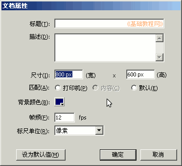
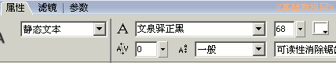
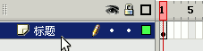

Flash脚本实例《打字》制作教程
作者：TeliuTe 来源：基础教程网
首先我们对程序界面进行设计，程序窗口大致是怎么样的，下面我们来看一个练习；
1、背景
1）启动Flash，点菜单“修改-文档...”命令，在出来的对话框里，将尺寸改为宽800，高度600，颜色选择深蓝色(#000066)；

2）点“确定”回到窗口，双击手形按钮，调整好屏幕显示，以“打字”为文件名，保存文件到自己的文件夹；
2、标题
1）选择文本工具，在属性面板中，设定字体为“文泉驿正黑”或者“黑体”也行，字号为68，颜色为白色；

2）在窗口中输入标题“指法练习”，放到顶端左右居中，上下位置以后还可以调；
3）在图层面板里，修改“图层1”为“标题”，保存一下文件；

本节学习了设置窗口背景和标题，如果你成功地完成了练习，请继续学习下一课内容；
本教程由86团学校TeliuTe制作|著作权所有
基础教程网：http://teliute.org/
美丽的校园……
转载和引用本站内容，请保留版权信息和本站链接。